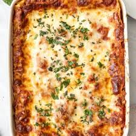

Lasagna
Mama Spinelli's Homemade Lasagna
This Recipe was handed down for five generations. It contains five layers of delicious pasta, cheeses, meats, and sauces. This dish is the culmination of a lifetime of trial and error resulting in literally the best lasagna in history.
Ingredients
- Tomato Sauce
- Lasagna pasta
- Mozerella Cheese
- Spiced Dog Meat
- Parmesean Cheese
- Ricatta Cheese
Steps
- Heat 3/4 of the tomato sauce for 5 minutes then add dog meat, let stand for 2 minutes.
- Add remaining 1/4 sauce as bottom layer of sauce to pan
- Add layer of lasagna noodles
- Add meat sauce
- Add ricatta cheese
- Create second layer substituting ricatta for parmisean.
- Repeat step 6 topping with mozeralla
- Bake at 400 for 15 minutes or until cheese is slightly browned